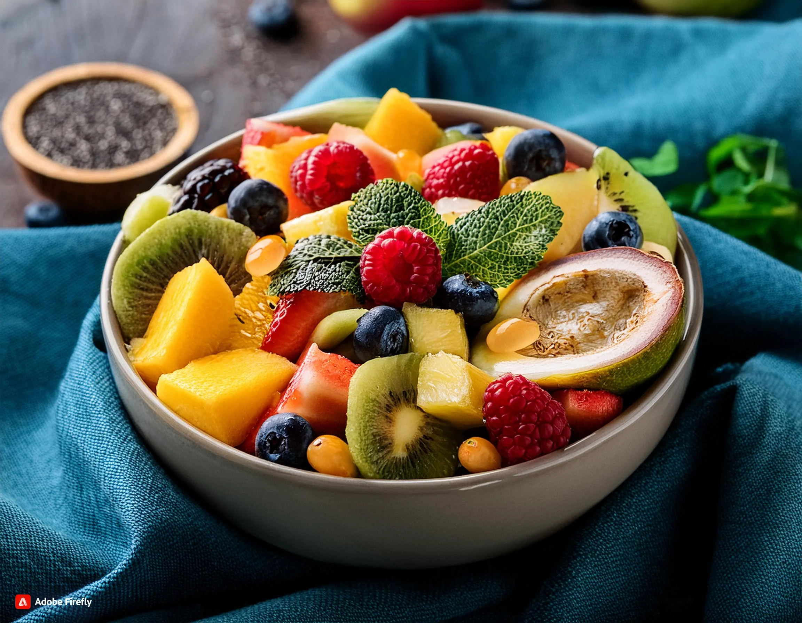
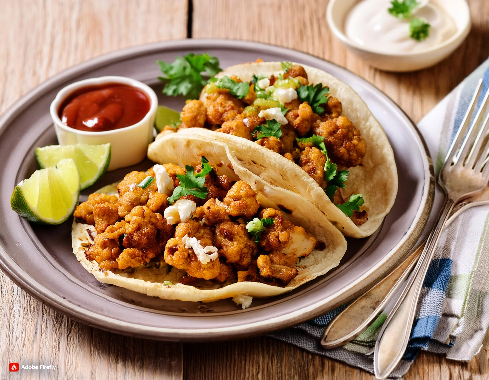

Vegano
Descubre recetas deliciosas y fáciles de preparar para tus comida Vegana.
Inicio
Recetas Guardadas
Nosotros
Recetas de Platillos veganos
Ensalada mixta saludable y fresca con mayonesa

Ensalada tropical de frutas con super alimentos
Arroz Frito Japonés con Espárragos

Taco Vegetariano de Coliflor y Nueces
Arroz Frito Japonés con Espárragos